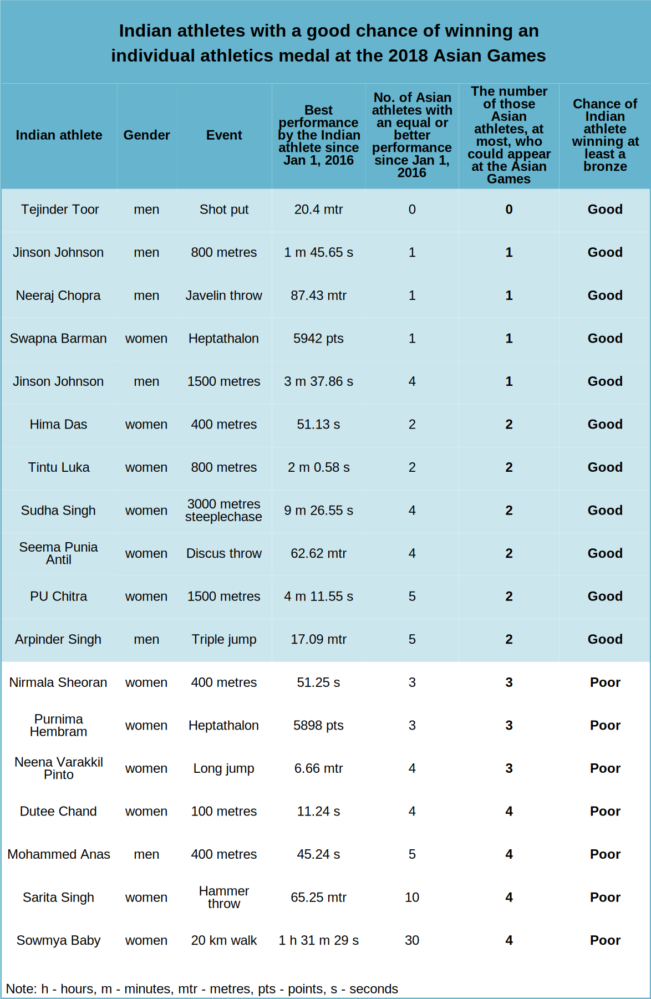
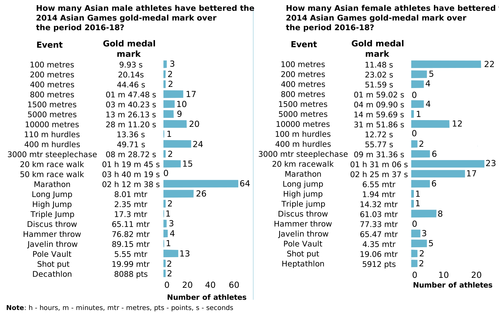
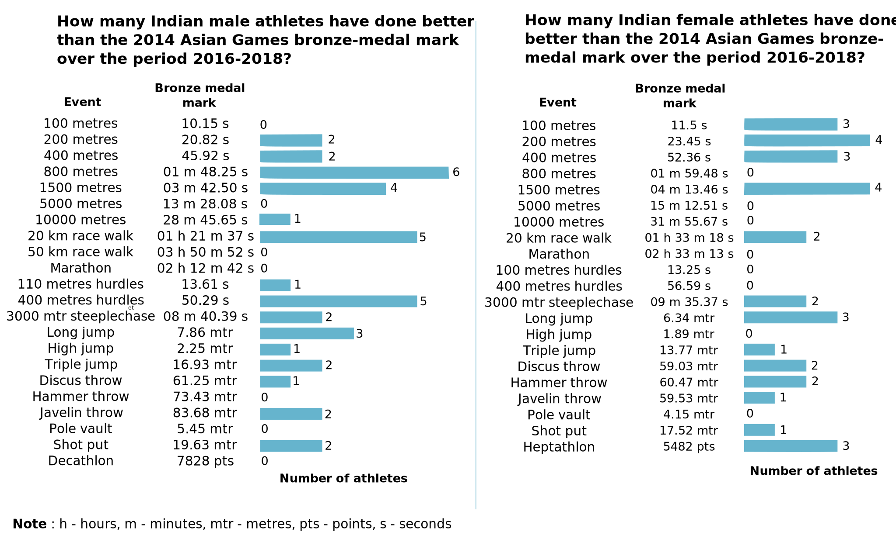
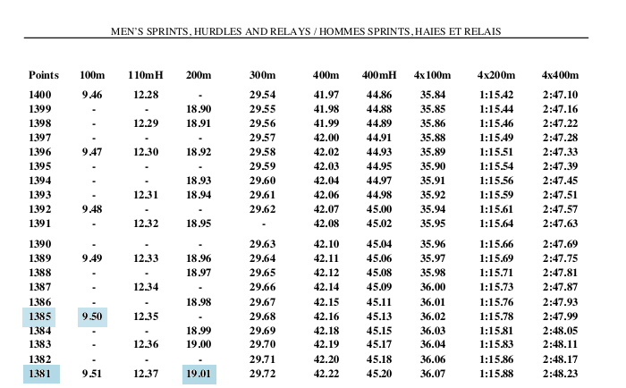
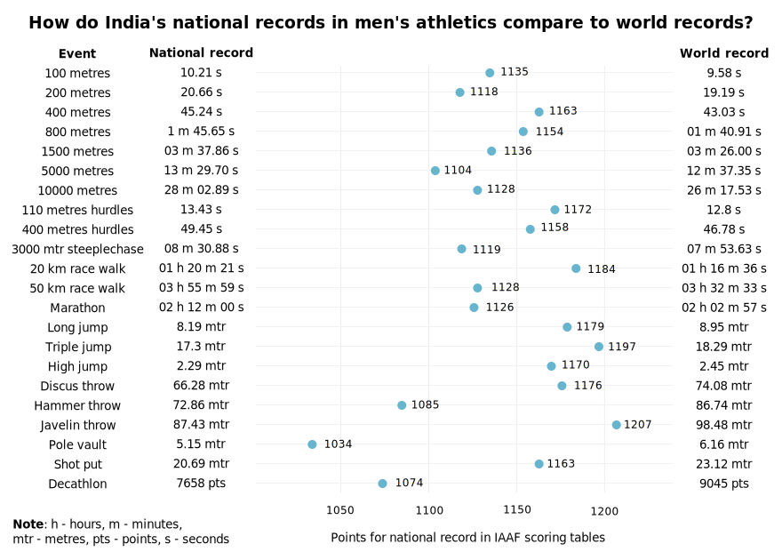
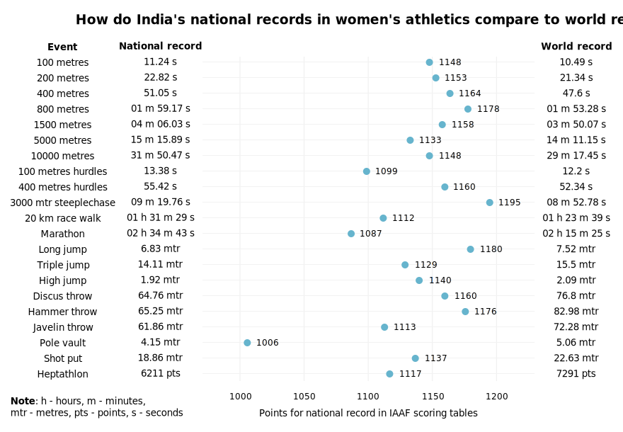
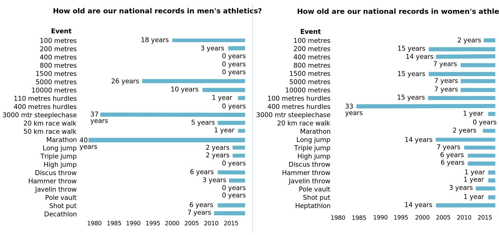

Credit: Julie V / Flickr
Credit: Julie V / Flickr
India doesn’t do track and field. That much is clear to everyone after years of poor performances at the Olympics and other competitions. In fact, India has never won a medal in athletics at the Olympics. With the athletics events starting at the Asian Games this Saturday, will India do any better there?
To be fair, India has traditionally performed better at the Asian Games. At the last edition in 2014 at the South Korean city Incheon, India won 12 medals in individual athletics. The country won one gold in the women’s discus throw through the veteran Seema Punia Antil, three silver medals (men’s discus throw, women’s 800 metres and women’s 20 km walk) along with eight bronze medals. India also won a gold in the women’s 4x400 metres race at Incheon, but that was a team event.
So what are the chances that India will better its tally from 2014 and win more than 12 medals in individual athletics at this year’s Asian Games?
Now there are 49 Indians going to the Asian Games to compete in athletics, with 40 of them competing in individual events, as opposed to team events such as the 4x400 metres race. These athletes will be competing across 29 different individual events for men and women.
Data on the performances of these 40 athletes tells us that only eleven of them have a chance of winning at least a bronze. If this turns out to be the case, it would be a lower medal tally than that of 2014. So how did we arrive at that number?
What we did was look at the performances of the 40 Indian athletes and their competition from Asia since January 2016. This was done using data available on the website of the International Association of Athletic Federations (IAAF), the governing body of world athletics.
We noted what the best performances of the Indian athletes were and how many of their competitors from Asia had equal or better performances. Now each country can only send two athletes per event, a limit imposed by the Olympic Council of Asia, the governing body for the Asian Games. This helps narrows down the potential competition for Indian athletes.
If the number of Asian competitors with better personal bests comes down to two or less, than that Indian athlete’s chances of winning at least a bronze goes up and we can count that person as a medal hopeful.
Let’s take an example to make our process clearer. India’s lone entrant for the men’s triple jump event is Arpinder Singh. Now Arpinder’s personal best since January 2016 was a jump of 17.09 metres in June at Guwahati. There are four Chinese athletes and one Indian athlete who’ve jumped longer than him in the past two-and-a-half years. The Indian athlete Renjith Maheswary is injured and not competing. And because of the two athlete per event limit, only two of those four Chinese athletes will be there at the Asian Games.
Which means that there will be only two athletes at the Asian Games who’ve jumped longer than Arpinder in the past two-and-a-half years, increasing his chances of getting at least a bronze.
The table below lists the 11 Indian athletes with a good chance of winning at least a bronze. A few of the other 40 athletes have also been listed to show how their chances are poorer.
There are a number of assumptions we’re making here, of course. That Arpinder and all the other Indian athletes won’t have off-days, that someone with a lower personal best in the past won’t suddenly peak in Indonesia etc. But our conclusions should hold as long as the final placings match the order of personal bests we’ve collated here.
If we look at the table, the one athlete who is the undisputed best in their event and a sure-shot for gold is shot-putter Tejinder Pal Singh Toor. Since January 2016, no Asian athlete has had a better performance than the 20.4 metres thrown by Tejinder in Patiala last year.
Is India benefitting from falling Asian standards?
Unfortunately, the medal chances for some of these Indian athletes have come about not because we’re suddenly world-beaters, or Asia-beaters if you will, but because standards have fallen in the region for some of these events.
For example, take the men’s javelin throw event. The 2014 Asian Games was won with a throw of 89.15 metres. Since January 1, 2016, only one Asian athlete has thrown better than that, Chao-Tsun Cheng of Chinese Taipei, who did 91.36 metres in August 2017. India’s sole men’s javelin throw entrant Neeraj Chopra has never thrown more than 89 metres in his career. But apart from that throw by Cheng, there hasn’t been a throw more than 89 metres by any other Asian male athlete either. And so the weak competition increases Chopra’s chances of a medal.
The chart below lists the number of Asian athletes in men's and women's events who've crossed the 2014 Asian Games gold-medal mark at least once since January 2016.
Contrast the men’s javelin throw to the men’s 400 metres hurdles. Since January 2016, while only one person has beaten the 2014 gold-medal mark in the javelin, 24 different people have beaten the gold-medal mark for the 400 metres hurdles. That 24 includes one of India’s own 400 metres hurdles entrants Ayyasamy Dharun. He beat the 2014 gold-medal mark earlier this year in Patiala with a time of 49.45 seconds. But there could be as many as six athletes at the Asian Games with better personal bests than Dharun, reducing his chances of winning even a bronze.
So is India any good in athletics at all?
Now as mentioned earlier, the Olympic Council of Asia has limited the number of athletes that can be sent for each track and field event at the 2018 Asian Games to two per country. So there’s a lot many more Indian athletes out there who aren’t going. So how good are they and how big is our athlete base in the different events, at least the body of athletes who can perform at an international level?
One way we can calculate this is by again looking at the 2014 Asian Games and taking not the gold-medal mark, but the bronze-medal mark into account. We can use it to represent some kind of a minimum acceptable level of performance in international athletics.
The chart below lists the number of Indian athletes in men's and women's events who've crossed the 2014 Asian Games bronze-medal mark at least once since January 2016.
From the chart, it seems that Indian male athletes excel in middle-distance running events such as the 800 metres and 1,500 metres with as many as six 800 metres runners doing better than the 2014 Asian Games bronze-medal performance over the past two-and-a-half years. However, when it comes to throwing events such as the hammer throw and discus throw, there aren’t many Indian men performing at an international level.
When it comes to women’s athletics, we see that there is a strong base in sprint events such as the 100 metres, 200 metres and 400 metres. But in long-distance running events such as the 5,000 metres and 10,000 metres, there is a complete absence of Indian women.
Just how far behind are we?
To get an insight into how far behind India is in world athletics, we can compare our national record in each athletic event to the world record. We can do this by looking at 'scoring tables' released by the IAAF, the latest of which came out in 2017.
The scoring tables are a a result of statistical analysis and are a way of equalising performances in different events. Points are awarded out of 1400 with the world record in each event usually at 1400 or somewhere close to it.
To understand how it works, take a look at a screenshot of the table below.
If someone runs the men's 100 metres in 9.50 seconds, that is awarded 1385 points by the table while if someone else runs the men's 200 metres in 19.01 seconds, they are given 1381 points. So the men's 100 metres in 9.50 seconds is considered a superior performance to running the men's 200 metres in 19.01 seconds.
In the two charts below, we've looked at India's national records in several events and recorded what points they would be given by the IAAF scoring tables. The closer a national record is to 1400, the closer it is to the world's best.
In men’s events, the national record that is closest to the world's best performances is that for the javelin throw. This was the 87.43 metres thrown by Neeraj Chopra this year in Qatar, despite being, as noted earlier, a sub-90 metres throw. The national record furthest away from the world record is in the pole vault (see chart below). The clearance of 5.15 metres stands at a paltry 1034 points. Another poor national record is in the men's hammer throw with the mark of 86.74 metres only getting 1085 points in the scoring table.
 The pole vault national record gets the fewest points in women's events too. The clearance of 4.15 metres gets a measly 1006 points from the IAAF scoring tables. Another poor national record is the women's marathon record of 2 hours, 15 minutes and 25 seconds which gets 1087 points. DO I NEED MORE?
And if we look at how old some of these national records are, the figures are even more depressing.
Some of them, such as the men’s marathon, are as many as 40 years old. The second-oldest national record in men’s events is for the 3000 metre steeplechase which was set 37 years ago. In women’s events, the only record that’s in the same age range is the 33-year-old national record for women’s 400 metres hurdles. The age of some of these records shows how much Indian performances have stagnated in those events.
So maybe Indian athletics has a lot more to do to catch up with everyone else. And maybe only a quarter of the athletes going to the Asian Games are medal prospects. But that’s still eleven possible medals. And if even a fraction of them ends up being golds, the future for Indian athletics could start looking a whole lot brighter. ◾
Credits
Parts of this story have been published earlier as graphics in the Hindustan Times newspaper.
Most of the data for the story was taken from IAAF.org and the Athletics Federation of India.
You can find the python code used to scrape webpages and analyse the data here. The jupyter notebook has been cleaned and commented up a bit. The github repo is available here.
Can't share all the data I used, that's the IAAF's, so can't redistribute it. The github repo does have the final csvs though which I used to make the charts.
If you’re an econometrician, statistician or data scientist and think I should have done something differently in this analysis, do let me know! You can contact me on twitter at @shijith and by email at mail@shijith.com.